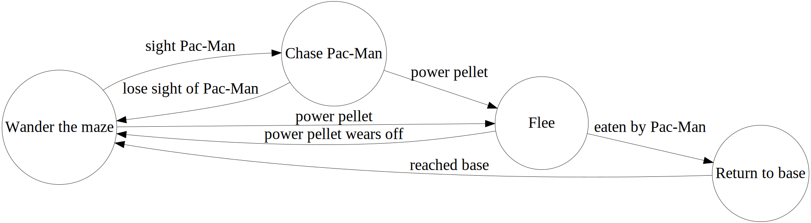

Refactoring with Regexes
Theoretical Definition
Let Σ be an alphabet. The reg. exp. over Σ and the sets that they denote are defined recursively as follows.
- ∅ is a reg. exp. and denotes the empty set.
- ε is a reg. exp. and denotes the set {ε}.
- For each a in Σ, a is a reg. exp. and denotes the set {a}.
- If r and s are reg. exp. denoting the languages R and S, respectively, then (r+s), (rs), and (r*) are reg. exp. that denote the sets R∪S, RS, and R*, respectively.
Practical Definition
A domain-specific language (DSL) for searching for text
or
Search strings with extra features
Basic Regexes
Basic Regexes
- ?
- Match 0 or 1 of the preceding element
- +
- Match 1 or more of the preceding element
- *
- Match 0 or more of the preceding element
- {m,n}
- Match between m and n of the preceding element
Basic Regexes
- [abc]
- Match characters a, b, c
- [a-z]
- Match any character a-z
- [^a-z]
- Match any character except a-z
- x|y
- Match x or y
- (xyz)
- Group+capture (treat xyz as a single element)
- \1, \2
- Match the 1st, 2nd, etc. capture group
- $1, $2
- Match the 1st, 2nd, etc. capture group in replace strings (check the docs)
Basic Regexes
- ^
- Match the beginning of the string or line
- $
- Match the end of the string or line
- \b
- Match a word boundary
Basic Regexes
- .
- Match any character (except a newline)
- \d
- Match any digit
- \D
- Match any non-digit
- \w
- Match any alphanumeric (or
_) - \W
- Match any non-alphanumeric
- \s
- Match any whitespace (including newline)
- \S
- Match any non-whitespace
Check docs for more.
Modifiers
- i
- Case insensitive
- g
- Global (instead of stopping at the first match)
- m
- Multiline matching
- s
- “Single-line matching” (“dotall”)
Check docs for more.
Examples
A Simple Example
Hello, world!
Hi, everyone!
Goodbye,boys and girls.
/Hello|Hi|Goodbye//\b(Hello|Hi|Goodbye),//\b(Hello|Hi|Goodbye),\s*//\b(Hello|Hi|Goodbye),\s*([^!.]*)//\b(Hello|Hi|Goodbye),\s*([^!.]*)[!.]//\b(Hello|Hi|Goodbye),\s*([^!.]*)[!.]/iA Simple Example
let match = greeting.search(
/\b(Hello|Hi|Goodbye),\s*([^!.]*?)[!.]/i);
if (match) {
window.alert('Greeting was "' + match[1]
+ '", name was "' + match[2] + '".');
}Finite State Machines
Regexes as Finite State Machines
/\b(Hello|Hi|Goodbye),\s*(.*?)[!.] “When my regex returned exactly what I expected”
—A Developer's Life in Gif
“When my regex returned exactly what I expected”
—A Developer's Life in Gif
RFC 822 Compliant Email Validation
(?:(?:\r\n)?[ \t])*(?:(?:(?:[^()<>@,;:\\".\[\] \000-\031]+(?:(?:(?:\r\n)?[ \t]
)+|\Z|(?=[\["()<>@,;:\\".\[\]]))|"(?:[^\"\r\\]|\\.|(?:(?:\r\n)?[ \t]))*"(?:(?:
\r\n)?[ \t])*)(?:\.(?:(?:\r\n)?[ \t])*(?:[^()<>@,;:\\".\[\] \000-\031]+(?:(?:(
?:\r\n)?[ \t])+|\Z|(?=[\["()<>@,;:\\".\[\]]))|"(?:[^\"\r\\]|\\.|(?:(?:\r\n)?[
\t]))*"(?:(?:\r\n)?[ \t])*))*@(?:(?:\r\n)?[ \t])*(?:[^()<>@,;:\\".\[\] \000-\0
31]+(?:(?:(?:\r\n)?[ \t])+|\Z|(?=[\["()<>@,;:\\".\[\]]))|\[([^\[\]\r\\]|\\.)*\
](?:(?:\r\n)?[ \t])*)(?:\.(?:(?:\r\n)?[ \t])*(?:[^()<>@,;:\\".\[\] \000-\031]+
(?:(?:(?:\r\n)?[ \t])+|\Z|(?=[\["()<>@,;:\\".\[\]]))|\[([^\[\]\r\\]|\\.)*\](?:
(?:\r\n)?[ \t])*))*|(?:[^()<>@,;:\\".\[\] \000-\031]+(?:(?:(?:\r\n)?[ \t])+|\Z
|(?=[\["()<>@,;:\\".\[\]]))|"(?:[^\"\r\\]|\\.|(?:(?:\r\n)?[ \t]))*"(?:(?:\r\n)
?[ \t])*)*\<(?:(?:\r\n)?[ \t])*(?:@(?:[^()<>@,;:\\".\[\] \000-\031]+(?:(?:(?:\
r\n)?[ \t])+|\Z|(?=[\["()<>@,;:\\".\[\]]))|\[([^\[\]\r\\]|\\.)*\](?:(?:\r\n)?[
\t])*)(?:\.(?:(?:\r\n)?[ \t])*(?:[^()<>@,;:\\".\[\] \000-\031]+(?:(?:(?:\r\n)
?[ \t])+|\Z|(?=[\["()<>@,;:\\".\[\]]))|\[([^\[\]\r\\]|\\.)*\](?:(?:\r\n)?[ \t]
)*))*(?:,@(?:(?:\r\n)?[ \t])*(?:[^()<>@,;:\\".\[\] \000-\031]+(?:(?:(?:\r\n)?[
\t])+|\Z|(?=[\["()<>@,;:\\".\[\]]))|\[([^\[\]\r\\]|\\.)*\](?:(?:\r\n)?[ \t])*
)(?:\.(?:(?:\r\n)?[ \t])*(?:[^()<>@,;:\\".\[\] \000-\031]+(?:(?:(?:\r\n)?[ \t]
)+|\Z|(?=[\["()<>@,;:\\".\[\]]))|\[([^\[\]\r\\]|\\.)*\](?:(?:\r\n)?[ \t])*))*)
*:(?:(?:\r\n)?[ \t])*)?(?:[^()<>@,;:\\".\[\] \000-\031]+(?:(?:(?:\r\n)?[ \t])+
|\Z|(?=[\["()<>@,;:\\".\[\]]))|"(?:[^\"\r\\]|\\.|(?:(?:\r\n)?[ \t]))*"(?:(?:\r
\n)?[ \t])*)(?:\.(?:(?:\r\n)?[ \t])*(?:[^()<>@,;:\\".\[\] \000-\031]+(?:(?:(?:
\r\n)?[ \t])+|\Z|(?=[\["()<>@,;:\\".\[\]]))|"(?:[^\"\r\\]|\\.|(?:(?:\r\n)?[ \t
]))*"(?:(?:\r\n)?[ \t])*))*@(?:(?:\r\n)?[ \t])*(?:[^()<>@,;:\\".\[\] \000-\031
]+(?:(?:(?:\r\n)?[ \t])+|\Z|(?=[\["()<>@,;:\\".\[\]]))|\[([^\[\]\r\\]|\\.)*\](
?:(?:\r\n)?[ \t])*)(?:\.(?:(?:\r\n)?[ \t])*(?:[^()<>@,;:\\".\[\] \000-\031]+(?
:(?:(?:\r\n)?[ \t])+|\Z|(?=[\["()<>@,;:\\".\[\]]))|\[([^\[\]\r\\]|\\.)*\](?:(?
:\r\n)?[ \t])*))*\>(?:(?:\r\n)?[ \t])*)|(?:[^()<>@,;:\\".\[\] \000-\031]+(?:(?
:(?:\r\n)?[ \t])+|\Z|(?=[\["()<>@,;:\\".\[\]]))|"(?:[^\"\r\\]|\\.|(?:(?:\r\n)?
[ \t]))*"(?:(?:\r\n)?[ \t])*)*:(?:(?:\r\n)?[ \t])*(?:(?:(?:[^()<>@,;:\\".\[\]
\000-\031]+(?:(?:(?:\r\n)?[ \t])+|\Z|(?=[\["()<>@,;:\\".\[\]]))|"(?:[^\"\r\\]|
\\.|(?:(?:\r\n)?[ \t]))*"(?:(?:\r\n)?[ \t])*)(?:\.(?:(?:\r\n)?[ \t])*(?:[^()<>
@,;:\\".\[\] \000-\031]+(?:(?:(?:\r\n)?[ \t])+|\Z|(?=[\["()<>@,;:\\".\[\]]))|"
(?:[^\"\r\\]|\\.|(?:(?:\r\n)?[ \t]))*"(?:(?:\r\n)?[ \t])*))*@(?:(?:\r\n)?[ \t]
)*(?:[^()<>@,;:\\".\[\] \000-\031]+(?:(?:(?:\r\n)?[ \t])+|\Z|(?=[\["()<>@,;:\\
".\[\]]))|\[([^\[\]\r\\]|\\.)*\](?:(?:\r\n)?[ \t])*)(?:\.(?:(?:\r\n)?[ \t])*(?
:[^()<>@,;:\\".\[\] \000-\031]+(?:(?:(?:\r\n)?[ \t])+|\Z|(?=[\["()<>@,;:\\".\[
\]]))|\[([^\[\]\r\\]|\\.)*\](?:(?:\r\n)?[ \t])*))*|(?:[^()<>@,;:\\".\[\] \000-
\031]+(?:(?:(?:\r\n)?[ \t])+|\Z|(?=[\["()<>@,;:\\".\[\]]))|"(?:[^\"\r\\]|\\.|(
?:(?:\r\n)?[ \t]))*"(?:(?:\r\n)?[ \t])*)*\<(?:(?:\r\n)?[ \t])*(?:@(?:[^()<>@,;
:\\".\[\] \000-\031]+(?:(?:(?:\r\n)?[ \t])+|\Z|(?=[\["()<>@,;:\\".\[\]]))|\[([
^\[\]\r\\]|\\.)*\](?:(?:\r\n)?[ \t])*)(?:\.(?:(?:\r\n)?[ \t])*(?:[^()<>@,;:\\"
.\[\] \000-\031]+(?:(?:(?:\r\n)?[ \t])+|\Z|(?=[\["()<>@,;:\\".\[\]]))|\[([^\[\
]\r\\]|\\.)*\](?:(?:\r\n)?[ \t])*))*(?:,@(?:(?:\r\n)?[ \t])*(?:[^()<>@,;:\\".\
[\] \000-\031]+(?:(?:(?:\r\n)?[ \t])+|\Z|(?=[\["()<>@,;:\\".\[\]]))|\[([^\[\]\
r\\]|\\.)*\](?:(?:\r\n)?[ \t])*)(?:\.(?:(?:\r\n)?[ \t])*(?:[^()<>@,;:\\".\[\]
\000-\031]+(?:(?:(?:\r\n)?[ \t])+|\Z|(?=[\["()<>@,;:\\".\[\]]))|\[([^\[\]\r\\]
|\\.)*\](?:(?:\r\n)?[ \t])*))*)*:(?:(?:\r\n)?[ \t])*)?(?:[^()<>@,;:\\".\[\] \0
00-\031]+(?:(?:(?:\r\n)?[ \t])+|\Z|(?=[\["()<>@,;:\\".\[\]]))|"(?:[^\"\r\\]|\\
.|(?:(?:\r\n)?[ \t]))*"(?:(?:\r\n)?[ \t])*)(?:\.(?:(?:\r\n)?[ \t])*(?:[^()<>@,
;:\\".\[\] \000-\031]+(?:(?:(?:\r\n)?[ \t])+|\Z|(?=[\["()<>@,;:\\".\[\]]))|"(?
:[^\"\r\\]|\\.|(?:(?:\r\n)?[ \t]))*"(?:(?:\r\n)?[ \t])*))*@(?:(?:\r\n)?[ \t])*
(?:[^()<>@,;:\\".\[\] \000-\031]+(?:(?:(?:\r\n)?[ \t])+|\Z|(?=[\["()<>@,;:\\".
\[\]]))|\[([^\[\]\r\\]|\\.)*\](?:(?:\r\n)?[ \t])*)(?:\.(?:(?:\r\n)?[ \t])*(?:[
^()<>@,;:\\".\[\] \000-\031]+(?:(?:(?:\r\n)?[ \t])+|\Z|(?=[\["()<>@,;:\\".\[\]
]))|\[([^\[\]\r\\]|\\.)*\](?:(?:\r\n)?[ \t])*))*\>(?:(?:\r\n)?[ \t])*)(?:,\s*(
?:(?:[^()<>@,;:\\".\[\] \000-\031]+(?:(?:(?:\r\n)?[ \t])+|\Z|(?=[\["()<>@,;:\\
".\[\]]))|"(?:[^\"\r\\]|\\.|(?:(?:\r\n)?[ \t]))*"(?:(?:\r\n)?[ \t])*)(?:\.(?:(
?:\r\n)?[ \t])*(?:[^()<>@,;:\\".\[\] \000-\031]+(?:(?:(?:\r\n)?[ \t])+|\Z|(?=[
\["()<>@,;:\\".\[\]]))|"(?:[^\"\r\\]|\\.|(?:(?:\r\n)?[ \t]))*"(?:(?:\r\n)?[ \t
])*))*@(?:(?:\r\n)?[ \t])*(?:[^()<>@,;:\\".\[\] \000-\031]+(?:(?:(?:\r\n)?[ \t
])+|\Z|(?=[\["()<>@,;:\\".\[\]]))|\[([^\[\]\r\\]|\\.)*\](?:(?:\r\n)?[ \t])*)(?
:\.(?:(?:\r\n)?[ \t])*(?:[^()<>@,;:\\".\[\] \000-\031]+(?:(?:(?:\r\n)?[ \t])+|
\Z|(?=[\["()<>@,;:\\".\[\]]))|\[([^\[\]\r\\]|\\.)*\](?:(?:\r\n)?[ \t])*))*|(?:
[^()<>@,;:\\".\[\] \000-\031]+(?:(?:(?:\r\n)?[ \t])+|\Z|(?=[\["()<>@,;:\\".\[\
]]))|"(?:[^\"\r\\]|\\.|(?:(?:\r\n)?[ \t]))*"(?:(?:\r\n)?[ \t])*)*\<(?:(?:\r\n)
?[ \t])*(?:@(?:[^()<>@,;:\\".\[\] \000-\031]+(?:(?:(?:\r\n)?[ \t])+|\Z|(?=[\["
()<>@,;:\\".\[\]]))|\[([^\[\]\r\\]|\\.)*\](?:(?:\r\n)?[ \t])*)(?:\.(?:(?:\r\n)
?[ \t])*(?:[^()<>@,;:\\".\[\] \000-\031]+(?:(?:(?:\r\n)?[ \t])+|\Z|(?=[\["()<>
@,;:\\".\[\]]))|\[([^\[\]\r\\]|\\.)*\](?:(?:\r\n)?[ \t])*))*(?:,@(?:(?:\r\n)?[
\t])*(?:[^()<>@,;:\\".\[\] \000-\031]+(?:(?:(?:\r\n)?[ \t])+|\Z|(?=[\["()<>@,
;:\\".\[\]]))|\[([^\[\]\r\\]|\\.)*\](?:(?:\r\n)?[ \t])*)(?:\.(?:(?:\r\n)?[ \t]
)*(?:[^()<>@,;:\\".\[\] \000-\031]+(?:(?:(?:\r\n)?[ \t])+|\Z|(?=[\["()<>@,;:\\
".\[\]]))|\[([^\[\]\r\\]|\\.)*\](?:(?:\r\n)?[ \t])*))*)*:(?:(?:\r\n)?[ \t])*)?
(?:[^()<>@,;:\\".\[\] \000-\031]+(?:(?:(?:\r\n)?[ \t])+|\Z|(?=[\["()<>@,;:\\".
\[\]]))|"(?:[^\"\r\\]|\\.|(?:(?:\r\n)?[ \t]))*"(?:(?:\r\n)?[ \t])*)(?:\.(?:(?:
\r\n)?[ \t])*(?:[^()<>@,;:\\".\[\] \000-\031]+(?:(?:(?:\r\n)?[ \t])+|\Z|(?=[\[
"()<>@,;:\\".\[\]]))|"(?:[^\"\r\\]|\\.|(?:(?:\r\n)?[ \t]))*"(?:(?:\r\n)?[ \t])
*))*@(?:(?:\r\n)?[ \t])*(?:[^()<>@,;:\\".\[\] \000-\031]+(?:(?:(?:\r\n)?[ \t])
+|\Z|(?=[\["()<>@,;:\\".\[\]]))|\[([^\[\]\r\\]|\\.)*\](?:(?:\r\n)?[ \t])*)(?:\
.(?:(?:\r\n)?[ \t])*(?:[^()<>@,;:\\".\[\] \000-\031]+(?:(?:(?:\r\n)?[ \t])+|\Z
|(?=[\["()<>@,;:\\".\[\]]))|\[([^\[\]\r\\]|\\.)*\](?:(?:\r\n)?[ \t])*))*\>(?:(
?:\r\n)?[ \t])*))*)?;\s*)
Simple Email Validation
[A-Za-z0-9._%+-]+@[A-Za-z0-9.-]+\.[A-Za-z]{2,}Simple Email Validation
re.compile(r"""
[A-Za-z0-9._%+-]+ # Username
@
[A-Za-z0-9.-]+ # Domain components
\.
[A-Za-z]{2,} # Top-level domain
""", re.X)Advanced Regexes
Advanced Regexes
- +?
- Match 1 or more (non-greedy)
- *?
- Match 0 or more (non-greedy)
- (?:xyz)
- Grouping (but not capture)
- (?ism)
- Turn on modifiers i, s, m
- (?^ism)
- Turn off modifiers i, s, m
Advanced Regexes
- (?=xyz)
- Zero-width positive look-ahead assertion
- (?!xyz)
- Zero-width negative look-ahead assertion
- (?<=xyz)
- Zero-width positive look-behind assertion
- (?<!xyz)
- Zero-width negative look-behind assertion
Advanced Regexes
- Extended (verbose) mode
- Named capture groups
Check docs for more.
From a Popular Commercial Library
function formatNumber(params) {
var number = params.value;
// this puts commas into the number eg 1000 goes to 1,000,
// i pulled this from stack overflow,
// i have no idea how it works
return Math.floor(number)
.toString()
.replace(/(\d)(?=(\d{3})+(?!\d))/g, "$1,");
}
- \d
- Match any digit
- ()
- Capture it for later
- \d
- Match any digit
- {3}
- Match 3 of the preceding element
- ()
- Group+capture
- (?:)
- Group without capture
- +
- Match 1 or more of the preceding element
- \d
- Match any digit
- (?!)
- Zero-width negative look-ahead assertion
- (?=)
- Zero-width look-ahead assertion
- $1
- Substitute the first capture group
- g
- Global
Refactoring with Regexes
Issue
Pre-VCS dates make code ugly.
DebVersion::DebVersion(const char *version)
{
const char *epoch_end = strchr(version, ':'); // 5-17-2009
if (epoch_end != NULL) // 5-17-2009
{ // 5-17-2009
mEpoch = atoi(version); // 5-17-2009
} // 5-17-2009
else // 5-17-2009
{ // 5-17-2009
mEpoch = 0; // 5-17-2009
}
const char *upstream_start;
if (epoch_end) {
upstream_start = epoch_end + 1;
} else {
upstream_start = version;
}
const char *upstream_end = strrchr(upstream_start, '-');
size_t upstream_size;
if (upstream_end == NULL) {
upstream_size = strlen(upstream_start);
} else {
upstream_size = upstream_end - upstream_start;
}
mUpstream = (char*) malloc(upstream_size + 1);
strncpy(mUpstream, upstream_start, upstream_size);
mUpstream[upstream_size] = '\0';
if (upstream_end == NULL) {
mRevision = strdup("0");
} else {
mRevision = strdup(upstream_end + 1);
}
}Strip trailing dates
- Search:
\s*//\s*\d+[-/]\d+[-/]\d+ - Replace: nothing
Clean up braces
- Search:
^( +(if|else).*)\r?\n\s+\{ - Replace:
$1 {
Clean up braces (better)
- Search:
^( +(if|else)(?!.*//).*)\r?\n\s+\{ - Replace:
$1 {
Limitations of Regexes
RegEx match open tags except XHTML self-contained tags, Stack OverflowWorse is Better
The “right” way to process code:
- XML DOM
- XSLT
- ReSharper
- Reflection
- Roslyn
- js-codemod
- Prettier
- clang-format
- LibTooling
Worse is Better
The “worse is better” way to process code:
- Regexes
Worse is Better

Worse is Better
Worse is Better
https://github.com/facebook/codemod“Codemod is a tool/library to assist you with large-scale codebase refactors that can be partially automated but still require human oversight and occasional intervention. Codemod was developed at Facebook and released as open source.”
codemod -m -d /home/jrosenstein/www --extensions php,html \
'(.*?)' \
'\2'What's the point?
Regexes are Awesome
Code is Text
Getting Philosophical

The Three Chief Virtues of a Programmer

- Laziness
- Impatience
- Hubris
Laziness
The quality that makes you go to great effort to reduce overall energy expenditure. It makes you write labor-saving programs that other people will find useful, and document what you wrote so you don't have to answer so many questions about it.
Impatience
The anger you feel when the computer is being lazy. This makes you write programs that don't just react to your needs, but actually anticipate them. Or at least pretend to.
Hubris
Excessive pride, the sort of thing Zeus zaps you for. Also the quality that makes you write (and maintain) programs that other people won't want to say bad things about.
False Laziness
The evil twin of the virtue of laziness
False Laziness
- Copy and paste programming
- Skip the tutorial or example exercises to save time, then spend longer on the project
- Do some process manually because I don't want to have to figure out or remember how the tool works
- Delete my Git repo and re-clone it instead of properly understanding Git
- Get halfway through a set of code changes to realize I should have automated them
- Use regexes for everything instead of learning refactoring tools
False Laziness
Repetitive work can be satisfying.
- You get in a routine.
- You don't have to think too hard.
- You feel like you're accomplishing something.
But it's often not the best way of getting something done.
And you can make mistakes.
Credits
Theoretical definition from Introduction to Automata Theory, Languages, and Computation, Hopcroft and Ullman
Jamie Zawinski photo from UpClosed
Larry Wall photo by Randal Schwartz from Portland, OR, USA - Flickr, CC BY-SA 2.0, Link Programming Perl is Copyright © O'Reilly. “Laziness, impatience, and hubris” quotes are from Programming Perl, Wall, Christiansen, and Schwartz, as quoted on C2. Commercial kitchen by Michael Browning on Unsplash Microwave photography by Jorge Sanz